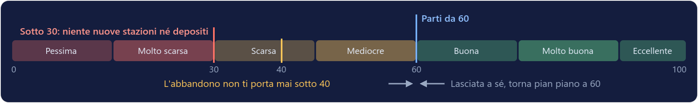

Consigli comunali
Cosa pensa di te il consiglio comunale e perché è importante.
Il consiglio comunale di ogni città valuta ogni compagnia da 0 a 100. Un consiglio comunale esasperato ti impedisce di costruire nella sua città.


Cosa cambia la tua valutazione
| Variazione | Perché |
|---|---|
| +2 al mese | Ogni tua stazione vicino alla città in cui un veicolo ha fermato nell'ultimo mese, per caricare o consegnare. Al massimo +6 al mese. |
| -1 al mese | Ogni stazione che aveva un servizio e non vede un veicolo da 90 giorni. Questo da solo non ti porta mai sotto 40. |
| -8 | Ogni edificio della città che demolisci. |
| -3 | Ogni casella di strade cittadine che smantelli. |
| -20 | Per ogni incidente ferroviario a meno di 18 caselle dal centro della città più vicina, per ogni compagnia coinvolta. |
| -0,5 | Ogni casella di alberi che abbatti in città o subito intorno, al massimo -6 in un colpo solo. |
| 1,5 al mese | Lasciata a sé, la valutazione torna pian piano a 60: due volte più in fretta mentre il consiglio comunale ti respinge. |
- Strade e boschi in aperta campagna non riguardano il consiglio comunale.
- La finestra della città mostra la tua valutazione ed elenca cosa l'ha cambiata di recente.
- Soddisfare la richiesta del consiglio può darti una bella spinta: vedi Sovvenzioni e richieste.
Riconquistarlo
| Nella finestra della città | Prezzo | Valutazione | E inoltre |
|---|---|---|---|
| Fai pubblicità | 9.000 $ | +4 | Per 60 giorni le tue stazioni in città ottengono un +15% sulle loro valutazioni. |
| Pianta alberi | 4.000 $ | +7 | Fino a 30 alberi intorno alla città, il che alza anche il valore del terreno. |
| Finanzia edifici | 40.000 $ | +3 | La città cresce in fretta per 120 giorni. |